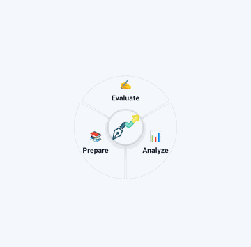

BabelGrade


BabelGrade is an agentic, fully local AI assessment tool. A student's handwritten copy or oral recording flows through a pipeline of cooperating local AI agents — a vision model that reads the handwriting, an offline speech model that transcribes the recording, and a 27B language model that grades the work — and every one of them runs on a local machine. No external API, no student data leaving the teacher's environment.

Screenshot of the mobile Criterion-by-criterion interface: each level card shows the AI's opinion, the entered level, and the /120 score recomputes as you swipe between levels
Turn a student's written copy or oral recording into a CEFR attestation with verbatim evidence. BabelGrade is a teacher-facing, international web app that maps every criterion of a CEFR attestation grid to a recommended level (A1–C2) — and shows why: each recommendation is backed by verbatim quotes (or timestamps) from the student's own work. It ships with the official French LVA/LVB attestation grids as presets (the app's only France-specific part — see Custom rubrics), but the framework, the UI and the whole workflow are language-neutral: the UI is localised in EN / FR / ES / DE, and any grid can be defined as a custom rubric.
It is an objective evidence extractor: it lowers the teacher's cognitive load, never replaces their judgment. Nothing is auto-graded — every level stays editable and recomputes instantly.
One-pager (FR) — a single A4 page explaining BabelGrade in French: interactive HTML · PDF · hosted at https://lemeur.github.io/BabelGrade/onepager/onepager.html.
Local AI — the default, not the compromise
Student work — a handwritten essay, a recorded oral exam — is personal data. A sovereign AI provider — one that respects students' data and is validated by the French Ministry of National Education — would be permitted to process it. But for development and fast experimentation, the simplest way to guarantee that a minor's production never leaves the teacher's environment is to run every AI step on the teacher's own machine. That is what BabelGrade does, and why it is built around a pipeline of local AI agents:
student work (all local — nothing leaves the teacher's machine)
┌───────────────────┐ ┌───────────────────────┐ Qwen3.8-27B
│ written copy │ photos────►│ OCR agent (vision) │ (SGLang, local)
│ (handwritten) │ │ reads copy verbatim │
└───────────────────┘ │ → transcript text │
┌───────────────────┐ ┌───────────┴───────────┐
│ oral recording │ audio────►│ ASR agent (offline) │ faster-whisper
│ (audio file) │ │ transcript + timing │ (base, int8, CPU)
└───────────────────┘ │ fluency metrics │
└───────────┬───────────┘
▼
┌───────────────────────┐ Qwen3.8-27B (local)
│ LLM grader agent │
│ rubric → Proof Matrix │
└───────────────────────┘
Three cooperating agents, one machine:
| Agent | Model | Role | Runs |
|---|---|---|---|
| OCR / vision | Qwen3.8-27B (NVFP4, SGLang) | reads handwritten copies line by line, verbatim, with per-line boxes | local GPU |
| ASR | faster-whisper base (int8) |
transcribes oral audio + word timings | local CPU, fully offline |
| Grader / language | Qwen3.8-27B | grades against the CEFR rubric, produces the Proof Matrix | local GPU |
The LLM cannot hear audio — the two channels deliberately stay separate: audio goes through the ASR agent first, the model only ever sees the timestamped transcript. No component phones home; the app runs offline once the models are cached.
What it does
- Analyze a submission — paste the student's text and/or attach photos of the copy (the vision model reads them directly — no OCR copy-paste), or drop an oral audio recording. Optionally attach the task instruction and/or the source document (text, photos, PDF, or audio).
- Get a Proof Matrix — every rubric criterion gets a suggested CEFR level, a justification, and verbatim evidence. No level without a quote.
- Attestation synthesis — on the official attestation grids (LVA/LVB presets), per-criterion levels (A1–C2) are converted to a deterministic score /120 and an attestation level, recomputed live as the teacher edits.
- Annotate the copy — select a word range in the OCR'd transcript: the photo auto-crops to it, the teacher drops a marker (sticker, level, note) that the AI reads as context for its next run.
- Annotate the oral — the transcript is word-timestamped; select a range, the player seeks to it, and markers carry time ranges.
- Dual AI loop — "AI first" (grade from the AI report) or "teacher first" (grade yourself, then ask the AI for a blind or aware second opinion that confirms or refutes each criterion with evidence).
- Roster photo import — import a class + its students from roster photos, with a review step before anything is committed.
Screenshots

Quick access to all functions from a simple home radial menu
AI analysis report — Proof Matrix with justifications + verbatim evidence, AI column (✓/≠), attestation /120, AI feedback card
Written copy annotation — photo ↔ OCR dual pane, word-range selection with auto-crop, marker panel (sticker · level · note)
Oral annotation — synced audio player + timestamped transcript, range selection, marker panel
How it works
- Backend — FastAPI (
app/), SQLite persistence (data/babelgrade.db). Multi-user: PBKDF2 logins, every owned table scoped to its owner. - LLM — a local OpenAI-compatible endpoint (by default SGLang serving
qwen38-27b, text + vision). The model cannot hear audio; oral submissions go through offline faster-whisper first (timestamped transcript + word timings), and fluency metrics (WPM, pauses, hesitation tokens) are computed deterministically from the ASR timings. - Async job queue — long LLM/Whisper work is offloaded to an in-process
background scheduler (
app/jobs.py, no external broker). The queue survives restarts; progress streams over SSE. Because the work is organised as asynchronous, persistent jobs with a stable handle-and-SSE contract, the system is built to scale out: the same tasks can be distributed across remote systems (additional inference machines) without changing the API or the UI. See async-jobs.html. - Frontend — a single vanilla-JS page (
static/index.html), localised in EN / FR / ES / DE, with a simplified "home" mode driven by an animated radial menu.
Custom rubrics
BabelGrade works with any CEFR rubric, not only the French presets:
- Presets (shared): the official French LVA/LVB attestation grids (comprehension, written expression, oral expression) are bundled as shared rubrics with the official A1→C2 criterion descriptors, the deterministic /120 scoring and the attestation thresholds. They ship in their original French wording — that is data, not UI: every screen around them is in the language the teacher has chosen.
- Custom rubrics (per owner): teachers can create their own rubric with any criteria, any level scale and any wording, in whatever language they prefer. A custom rubric is private to its owner and can be used on any assignment, in any of the four UI languages.
Roadmap — where the agentic loop goes next
The core loop (OCR/ASR → grader → Proof Matrix) already works end-to-end on local models. The remaining work is about making each agent smarter and closing the loop from assessment back to the learner. Priorities:
- Harden the OCR / ASR agents — faithful, not "correct". Improve the transcription and handwriting-reading workflows so they stay verbatim: they must adapt to imperfect audio and imperfect cursive writing (blue grid paper, smudges, crossed-out words) without correcting the student's own errors. A student's mistakes are the signal the grader reads; a "cleaned-up" transcript would silently destroy it.
- Relevant feedback for the learner. Improve the analysis so each student gets actionable feedback — key strengths, target areas, and concrete improvement suggestions and practice exercises tied to the weak criteria. Sharing will be via a secure link / QR code, so a teacher can hand a report straight to a student without creating an app account.
- Per-student progression for the teacher. Aggregate an individual's results across all evaluations to profile their skills over time, then propose and track a personalised progression plan and share it. This directly supports preparing class councils / report periods.
- Class-level insight. Aggregate a whole group's results to give the teacher a read on the class's overall level and heterogeneity — what worked, what to re-teach, who to watch.
These are deliberately agentic upgrades: better prompts, better evidence handling, and multi-agent reasoning on top of the same local models.
Deployment today, and beyond. Teachers correct their students' work on their own machine, at home — BabelGrade is designed for that: one local install, the AI pipeline on the teacher's hardware, and the async job layer ready for tasks to be fanned out to additional (remote) inference systems when the class grows. If the tool proves itself, a hosted deployment within the Ministry of National Education is a realistic next step — the same data-protection guarantees, at ministry scale, without every teacher running their own GPU.
Quick start
pip install -r https://github.com/lemeur/BabelGrade/blob/main/requirements.txt
./run.sh # http://<host>:8090
HOST=0.0.0.0 PORT=8090 ./run.sh
With Docker (web front + job workers in one container):
cp .env.example .env # optional, then edit
docker compose up -d --build # http://localhost:8090
Configuration (env vars, all optional):
| Variable | Default | Purpose |
|---|---|---|
BABELGRADE_LLM_BASE |
http://127.0.0.1:8078/v1 |
OpenAI-compatible LLM endpoint |
BABELGRADE_LLM_MODEL |
qwen38-27b |
Model name |
BABELGRADE_LLM_API_KEY |
(empty) | API key |
BABELGRADE_INITIAL_LOGIN |
tibo |
first-boot account (registration stays open only for this) |
BABELGRADE_INITIAL_PASSWORD |
(empty) | first-boot password |
BABELGRADE_DB_PATH |
data/babelgrade.db |
SQLite path (tests use a throwaway DB) |
BABELGRADE_WHISPER_CACHE |
~/.cache/huggingface/hub |
faster-whisper model cache (download_root) |
Requires Python 3.11+, uvicorn, faster-whisper, PyMuPDF. The Whisper model is cached locally and the app runs fully offline (all Hugging Face downloads are disabled at import time). The LLM endpoint must be reachable — BabelGrade has no LLM fallback.
Security model
- Multi-user, per-owner scoping. PBKDF2-HMAC-SHA256 (per-user salt + application pepper) password hashes; session cookie auth. Every owned table (students, assignments, submissions, analyses, annotations, jobs, custom rubrics) is scoped to its owner on every read and write, enforced by a FastAPI dependency that injects the current owner.
- Media ownership.
/api/filesserves a file only to its owner; foreign, unknown, and untracked files all 404 identically so no filename enumeration is possible. - Registration is closed by default. Accounts can only be registered at first boot (via the initial-login env vars); the app refuses to stay in "registration open" afterwards.
- Nothing leaves the teacher's environment. No external API calls at all in the local deployment: the LLM is a local OpenAI-compatible endpoint and the ASR model runs offline.
- Evidence before level. The backend warns when a criterion mapping lacks a verbatim quote; recurring errors are flagged, isolated slips are not over-penalised; per-student accommodations may change content and feedback but never the demonstrated level.
Testing
The suite is split into two classes:
Hermetic, in-process suites (throwaway SQLite DB, in-process OpenAI mock server, no live server, no LLM, no Whisper model) — these run in CI and can be run anywhere the dependencies install:
python tests/test_multiuser_smoke.py # auth gate, owner scoping, isolation
python tests/test_media_ownership.py # media-ownership 404 matrix
python tests/test_p2_mock_llm_e2e.py # full job pipeline against a mocked LLM
python tests/test_roster_import.py # roster photo import E2E (mocked LLM)
python tests/test_ui_language_prompt.py # prompt-builder unit checks
python tests/test_p0_state_i18n_js.py # i18n 4-lang balance + node --check
python -m pytest tests/test_ocr_resnap.py -q # OCR resnap alignment units
Live Playwright suites drive the real UI against a running server on
127.0.0.1:8090 (they read the live-server credentials from
tests/.credentials, which is gitignored by design). See
https://github.com/lemeur/BabelGrade/blob/main/CONTRIBUTING.md for the local recipe.
CI: https://github.com/lemeur/BabelGrade/blob/main/.github/workflows/ci.yml runs ruff,
byte-compilation and every hermetic suite on Python 3.11 and 3.13.
Repository layout
app/main.py FastAPI factory + auth gate + include_router (no routes)
app/routes_*.py route modules (auth, rubrics, students, assignments,
analyze, evaluate, jobs, analyses, annotate, files,
docs, admin, health, roster)
app/assess.py prompts, fluency metrics, JSON parse/validate
app/llm_client.py OpenAI-compatible client (stream + JSON extract)
app/whisper.py offline faster-whisper wrapper (cached model)
app/db.py SQLite + forward migration
app/stats.py assignment + per-student stats
app/rubrics.py LVA/LVB attestation presets + /20 conversion tables
app/auth.py multi-user auth (PBKDF2, owner scoping)
app/jobs.py async job queue (scheduler, workers, SSE)
app/media.py upload staging + PDF/scan/doc-audio extraction
app/ocr.py LLM-direct OCR for the annoter (per-line boxes 0..1000)
app/imaging.py image enhancement for copy-photo OCR
app/config.py paths + upload limits
static/index.html single-page UI (EN/FR/ES/DE)
docs/ user guide, architecture, async-jobs (sources for the docs site)
site/ GitHub Pages docs site (built from docs/ + README by scripts/build_site.py)
tests/ hermetic + Playwright E2E suites, mock LLM server
scripts/ dev probes, screenshot generators, docs-site build
mockups/ standalone UI prototypes (radial menu, hybrid annoter)
.github/workflows/ CI (lint + hermetic suites, Python 3.11/3.13)
run.sh launcher
Development
Short guide: see https://github.com/lemeur/BabelGrade/blob/main/CONTRIBUTING.md. Module map, import direction rules and the "add an endpoint" recipe: architecture.html. Outstanding work: https://github.com/lemeur/BabelGrade/blob/main/TODO.md.
Built with AI
This project is vibe-coded. The codebase was produced by an LLM (Hermes Agent) working with Qwen3.8-27b — the same local model the app uses at runtime to assess student work. Feature design, UI iterations, OCR pipeline, and the whole E2E test suite were co-authored in conversation, with the app itself running on the same machine. It stands as a working example of a non-trivial, multi-user, production-shaped web app built conversationally on a local 27B model.
License
MIT © 2026 BabelGrade contributors